Keliaujame visi keturiese į Kopenhagą trims naktims — be automobilio, pėsčiomis ir viešuoju transportu. Pirmą dieną nusileidę ore uoste iškart traukiame į Nyhavn ir senamiestį, antrą dieną — karališkieji rūmai ir kanalai, trečią — Nacionalinis muziejus, Christianshavn, Christiania ir vakare Deep Purple koncertas Royal Arena, o ketvirtą rytą ramiai pasivaikščiojame po Sydhavnen prieš skrydį namo. Visos keturios naktys praleidžiamos tame pačiame apartamente su vaizdu į kanalą.
💡 Patarimai keliautojams
- Visoms viešojo transporto atkarpoms (metro, S-tog, Havnebus) patogiausia pirkti bilietus DOT Mobilbilletter programėlėje telefone pagal zonas.
- Antros dienos rytą iš apartamentų Kenny Drews Vej 37 iki Rosenborg Castle: 5 min pėsčiomis iki Sluseholmen stotelės, Metro M4 iki København H (~8 min), toliau bet kuris S-tog traukinys (labai dažnas) iki Nørreport (~3 min), toliau 6 min pėsčiomis iki pilies.
- Trečios dienos rytą iš apartamentų iki Nationalmuseet: 4 min pėsčiomis iki Sluseholmen stotelės, Metro M4 iki København H (~8 min), toliau ~15 min pėsčiomis iki muziejaus.
- Vandens autobusas iš Nyhavn į Teglholmeną yra linija 991 (ne 992, kaip rašoma tvarkaraštyje – ta linija važiuoja priešinga kryptimi, į Orientkaj), kelionė trunka apie 30-40 min.
- Grįžtant po Deep Purple koncerto į apartamentus, paprasčiau ir patikimiau nueiti 2 min iki Bella Center stotelės ir važiuoti Metro M1, nei laukti rečiau važiuojančio Öresundstog traukinio nuo Ørestad.
- Paskutinę dieną buferis iki skrydžio yra tikslus (lygiai 2 val.), todėl verta iš Fisketorvet išvykti kiek įmanoma anksčiau.
🏠 Nakvynė
Apartment with canal view
Adresas: Kenny Drews Vej 37, 2450 København, Denmark
9,0/10 · 50 atsiliepimų
Apartamentai Kopenhagoje, Sydhavnen rajone, su terasa ir vaizdu į ežerą/sodą, nemokamu belaidžiu internetu. Nerūkoma, 2,8 km nuo Bella Center.
Apartamentų aprašymas
Apartamentai Kopenhagoje, Zelandijos regione, su terasa. Iš apartamentų atsiveria vaizdas į ežerą ir sodą, juose taip pat yra nemokamas belaidis internetas. Būstas nerūkantiesiems, įsikūręs 2,8 km nuo Bella Center. Erdviuose apartamentuose yra 1 miegamasis, 1 vonios kambarys, patalynė, rankšluosčiai, plokščio ekrano televizorius, valgomojo zona, pilnai įrengta virtuvė ir terasa su vaizdu į jūrą. Nuo balkono, kuriame taip pat yra lauko baldų, svečiai gali grožėtis vidinio kiemo vaizdais. Kopenhagos centrinė geležinkelio stotis yra 3,9 km nuo apartamentų, o Ny Carlsberg Glyptotek – 4,2 km. Kopenhagos oro uostas yra 11 km nuo būsto.
 Nuotraukos: Booking.com
Nuotraukos: Booking.com


Booking.com 🔎 Booking.com: 2026-10-23–2026-10-26, 4 žm.
🍽 Netoliese pavalgyti
- Spiseriet Teglholmen — restoranas · 50 m · ~1 min pėsčiomis — 📍 Google Maps
- Sholay Indian Cuisine — indiška virtuvė · 290 m · ~4 min pėsčiomis — 📍 Google Maps
- Caféen på Tegholmen — kavinė · 300 m · ~4 min pėsčiomis — 📍 Google Maps
- Moxy Copenhagen Sydhavnen — kavinė · 480 m · ~6 min pėsčiomis — 📍 Google Maps
- Scandic Restaurant — tarptautinė virtuvė · 570 m · ~8 min pėsčiomis — 📍 Google Maps
🛒 Parduotuvės
- Netto — maisto prekių parduotuvė · 510 m · ~7 min pėsčiomis — 📍 Google Maps
- Circle K — mini market · 530 m · ~7 min pėsčiomis — 📍 Google Maps
- Supermarco — maisto prekių parduotuvė · 550 m · ~7 min pėsčiomis — 📍 Google Maps
📅 1 diena, 2026-10-23 — Atvykimas į Kopenhagą: Nyhavn, Amalienborg, Rundetårn
Copenhagen Airport (CPH)
 Nuotrauka: kallerna, CC BY-SA 4.0, Wikimedia
Nuotrauka: kallerna, CC BY-SA 4.0, Wikimedia
Skrydis iš Kauno atvyksta 09:40. Po bagažo atsiėmimo keliaukite metro M2 link miesto centro (stotelė yra tiesiai oro uosto terminale).
📍 Google MapsMetro M2: Københavns Lufthavn → Kongens Nytorv (tiesioginis, ~14 min), toliau 5 min pėsčiomis iki Nyhavn. Bilietas DOT programėlėje arba automate stotyje.
Nyhavn
 Nuotrauka: Dietmar Rabich, CC BY-SA 4.0, Wikimedia
Nuotrauka: Dietmar Rabich, CC BY-SA 4.0, Wikimedia
Spalvoti XVII a. prekybininkų namai palei kanalą — pati žinomiausia Kopenhagos vieta nuotraukoms. Rytas, kol nėra minių, geriausias laikas.
📍 Google MapsPėsčiomis senamiesčiu.
Amalienborg
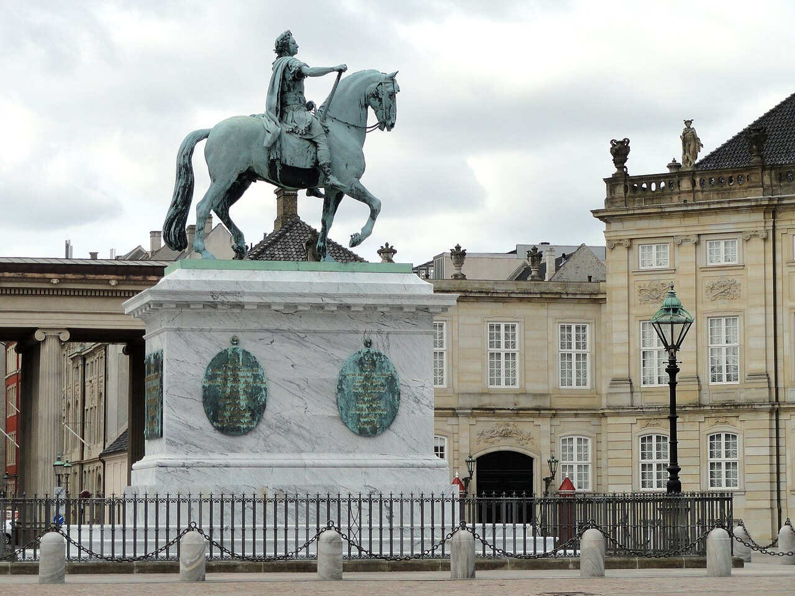
Nuotrauka: Daderot, CC0, WikimediaKarališkųjų rūmų keturkampis. Sargybos kaita vyksta apie 12:00 — verta pagaudyti. Muziejaus bilietas 125 DKK internetu / 135 DKK vietoje, nemokamai <18 m.
📍 Google MapsPėsčiomis senamiesčiu.
Nyhavns Færgekro (pietūs)
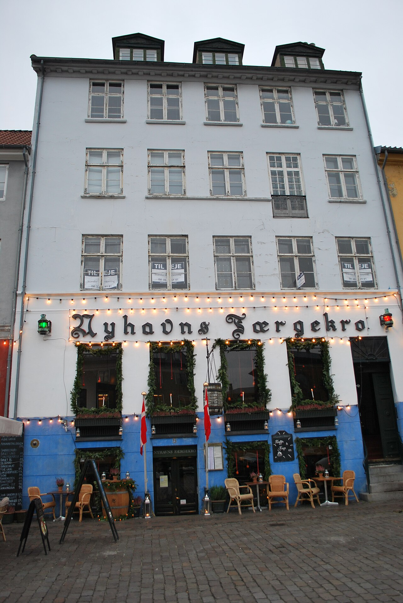
Nuotrauka: Helge Høifødt, CC BY-SA 3.0, WikimediaPietūs tradiciniame restorane tiesiai ant Nyhavn kanalo — smørrebrød ir žuvies lėkštė keliems. Žr. ir "Kur pavalgyti" skiltį – čia verta paragauti silkių bufeto ir klasikinio smørrebrød.
📍 Google MapsPėsčiomis senamiesčio gatvėmis.
Rundetårn
 Nuotrauka: Dietmar Rabich, CC BY-SA 4.0, Wikimedia
Nuotrauka: Dietmar Rabich, CC BY-SA 4.0, Wikimedia
Seniausia veikianti observatorija Europoje — spiralinis pakilimas vietoje laiptų, vaizdas į senamiestį nuo viršaus. Bilietas 60 DKK, nemokamai <18 m. Atvira 10:00–18:00.
📍 Google Maps13 min pėsčiomis nuo Rundetårn iki Nyhavn prieplaukos, toliau vandens autobusas (Havnebus) Nr. 991 (ne 992, kaip rašo tvarkaraštis) iki Teglholmen, realiai ~30–40 min; bilietas – standartinis DOT bilietas pagal zonas.
Teglholmen Havnebus prieplauka
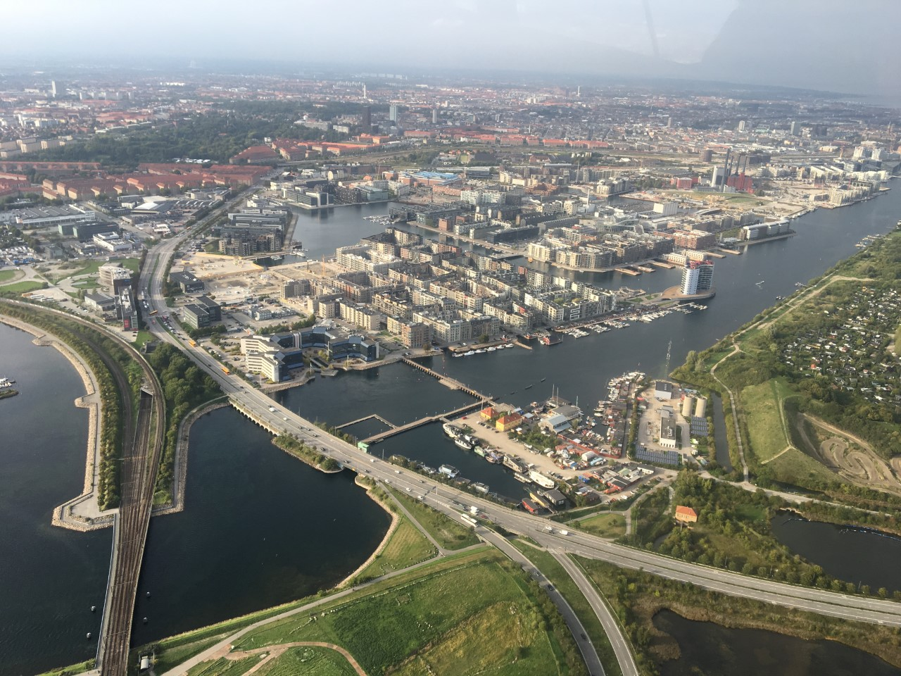
Nuotrauka: JRS DK, CC BY-SA 4.0, WikimediaĮdomus būdas pasigrožėti uostu keliaujant namo — plaukiant pro naująją Sydhavnen architektūrą.
📍 Google MapsPėsčiomis Teglholmeno kvartalu.
Apartamentai, Kenny Drews Vej 37
Įsikūrimas apartamentuose. Ramus Sydhavnen/Teglholmen rajonas prie kanalo.
📍 Google MapsPėsčiomis palei Sydhavnen kanalą.
Halvandet (vakarienė)
Vakarienė plūduriuojančiame uosto bare-restorane, pačiame Sydhavnen rajone — atsipalaiduojanti pirmos dienos pabaiga.
📍 Google Maps🌧 Planas B (jei blogas oras)
Jautru orui: Amalienborg kiemo lankymas lauke ir sargybos kaitos stebėjimas, bei Teglholmen Havnebus vandens autobuso kelionė atviru denimu nukenčia nuo lietaus (83% tikimybė, 4,1 mm kritulių) ir vėjo.
Alternatyva: Dizaino muziejus ir Glyptoteko žiemos sodas vietoj Amalienborg kiemo ir vandens autobuso
Copenhagen Airport (CPH)
Skrydis iš Kauno atvyksta 09:40. Po bagažo atsiėmimo keliaukite metro M2 link miesto centro.
📍 Google MapsNyhavn
Lietingu rytu trumpa stotelė – pasigrožėkite spalvotais namais nuo kanalo pakrantės, be ilgo pasivaikščiojimo.
📍 Google MapsDesignmuseum Danmark
Vietoj lauko Amalienborg kiemo ir sargybos kaitos – šilta, sausa danų dizaino ekspozicija (baldai, Kaare Klint, plakatai). Atvira 10:00–18:00, bilietas apie 115 DKK, nemokamai <18 m.
📍 Google MapsRundetårn
Spiralinis užvažiavimas iki viršaus yra po stogu – tinka ir lyjant. Viršutinė atvira galerija gali laikinai užsidaryti dėl stipraus vėjo ar liūties.
📍 Google MapsNy Carlsberg Glyptotek
Vietoj atviro Havnebus vandens autobuso – stiklinis Žiemos sodas su palmėmis ir antikos skulptūrų kolekcija, puiku lietingai popietei. Atvira 10:00–17:00.
📍 Google MapsApartamentai, Kenny Drews Vej 37
Įsikūrimas apartamentuose po lietingos dienos.
📍 Google MapsHalvandet
Vakarienė plūduriuojančiame uosto bare-restorane su šildoma vidaus vieta – gera pirmos dienos pabaiga net ir lyjant.
📍 Google MapsBaigiasi toje pačioje vietoje kaip ir pagrindinis planas — apartamentuose prie Sydhavnen kanalo.
Patarimas: Designmuseum Danmark atviras penktadienį 10:00–18:00, bilietus patogu pirkti iš anksto internetu; Glyptoteko paskutinis įėjimas 16:30.
📅 2 diena, 2026-10-24 — Rosenborg, Torvehallerne, kanalų plaukimas, Christiansborg
Rosenborg Castle
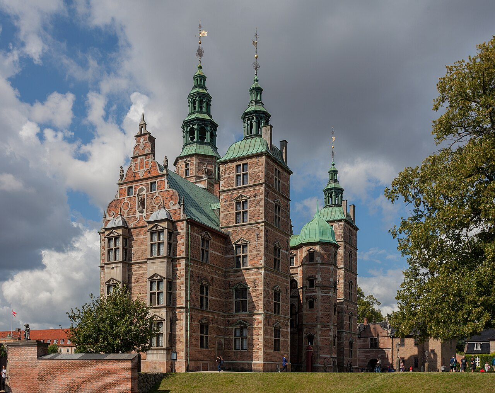
Nuotrauka: Marco Almbauer, CC0, WikimediaKarūnos brangenybės ir karališkoji istorija gražiame renesansiniame pilaitėje. Bilietas 140 DKK, nemokamai <18 m. Atvira 10:00–16:00 (žiemos sezonas).
📍 Google MapsPėsčiomis per Kongens Have parką.
Torvehallerne (pietūs)
 Nuotrauka: Jorge Franganillo, CC BY 2.0, Wikimedia
Nuotrauka: Jorge Franganillo, CC BY 2.0, Wikimedia
Pasivaikščiokite tarp stendų, pietūs (13:00–14:00) — Hallernes Smørrebrød prekystalyje, geriausias tradicinio smørrebrød pasirinkimas mieste. 📍 Google Maps (Hallernes Smørrebrød)
📍 Google MapsPėsčiomis per senamiestį.
Christiansborg Palace
Nuotrauka: Moahim, CC BY-SA 4.0, WikimediaDanijos parlamento būstinė, reprezentacinės salės ir rūmų griuvėsiai. Bilietas 215 DKK internetu / 225 DKK vietoje, nemokamai <18 m. Atvira 10:00–17:00.
📍 Google MapsPėsčiomis Slotsholmeno sala link Nyhavn.
Kanalų plaukimas (Stromma)
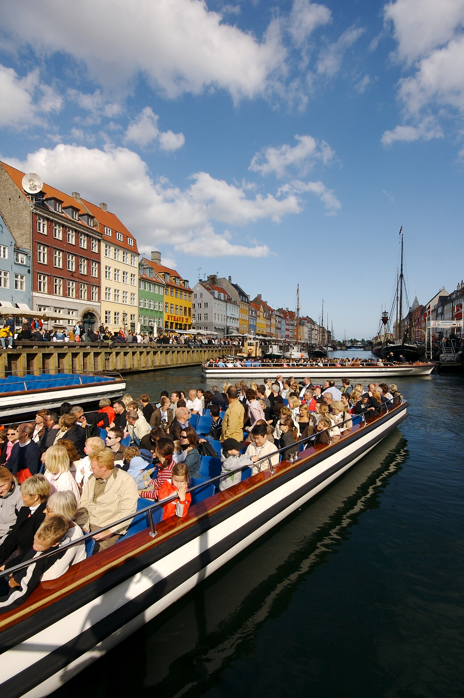
Nuotrauka: Flickr user: Olga Itenberg NYC, US https://www.flickr.com/people/olgite/, CC BY 2.0, WikimediaValandos trukmės plaukimas kanalais ir uostu su gyvu gidu (spalio mėn. tik su gidu). Tikslų tvarkaraštį verta patikrinti stromma.com prieš atvykimą.
📍 Google Maps~20 min pėsčiomis nuo Nyhavn iki Rådhuspladsen stotelės, M3: Rådhuspladsen → København H (~5 min), M4: København H → Sluseholmen (~8 min), toliau ~30 min pėsčiomis iki Café Langebro.
Café Langebro (vakarienė)
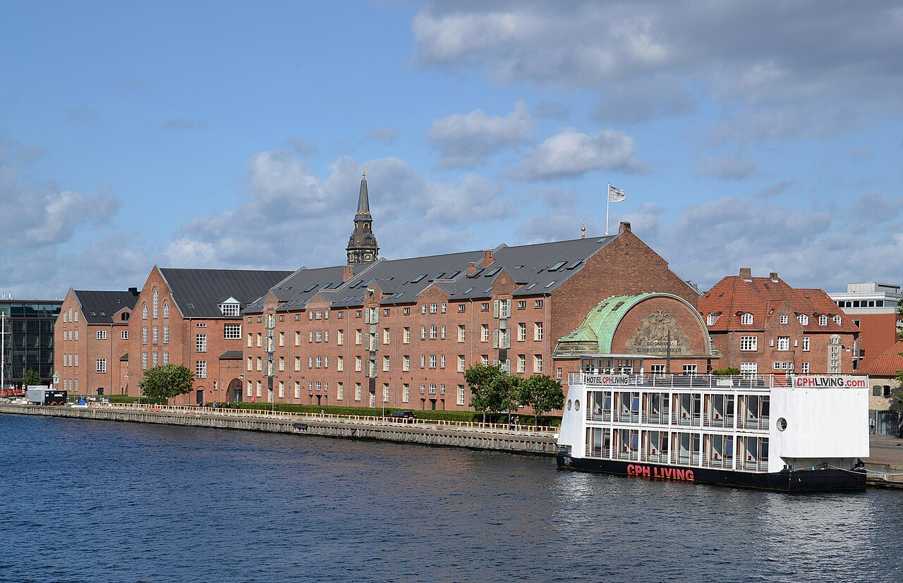
Nuotrauka: Pudelek, CC BY-SA 4.0, WikimediaVakarienė jaukiame kanalo pakrantės kafe netoli apartamentų, danų klasika — smørrebrød ir žuvies patiekalai. Veikia nuo 1917 m.
📍 Google Maps🌧 Planas B (jei blogas oras)
Jautru orui: kanalų plaukimas su Stromma vyksta atviroje valtyje – dulksna (64% tikimybė) ir iki 29 km/val vėjas daro šią valandą nepatogią ir mažiau vaizdžią.
Alternatyva: Rosenborg, Torvehallerne, Christiansborg bokštas vietoj kanalų plaukimo
Rosenborg Castle
Karūnos brangenybės ir karališkoji istorija renesansiniame pilaitėje. Bilietas 140 DKK, nemokamai <18 m.
📍 Google MapsChristiansborg Palace
Danijos parlamento būstinė, reprezentacinės salės ir rūmų griuvėsiai.
📍 Google MapsChristiansborg Slot Taarnet
Vietoj atviros kanalų plaukimo valtyje – nemokamas bokštas tame pačiame rūmų komplekse, vaizdas į miestą iš stiklinės apžvalgos aikštelės, saugu nuo lietaus ir vėjo.
📍 Google MapsBaigiasi toje pačioje vietoje kaip ir pagrindinis planas — Café Langebro / apartamentai.
Patarimas: Christiansborg bokštas (Taarnet) yra nemokamas ir yra tame pačiame rūmų komplekse kaip Christiansborg Palace – patogu apžiūrėti tiesiai po rūmų, šeštadienį atviras 11:00–21:00.
📅 3 diena, 2026-10-25 — Nationalmuseet, Christianshavn, Christiania ir Deep Purple koncertas
Nationalmuseet
 Nuotrauka: Dietmar Rabich, CC BY-SA 4.0, Wikimedia
Nuotrauka: Dietmar Rabich, CC BY-SA 4.0, Wikimedia
Didžiausias Danijos muziejus — vikingų ir priešistorės kolekcijos. Bilietas apie 150 DKK (pastovioji ekspozicija kai kuriais duomenimis nemokama — verta patikrinti kasoje). Atvira 10:00–17:00.
📍 Google MapsPėsčiomis tuo pačiu kvartalu.
Kanalcaféen (pietūs)
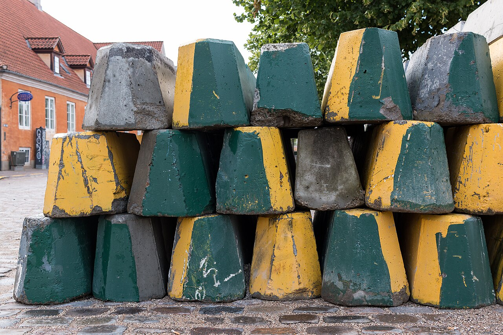
Nuotrauka: Dietmar Rabich, CC BY-SA 4.0, WikimediaPietūs tradiciniame danų restorane prie kanalo, pačiame Slotsholmeno saloje, visai arti Nacionalinio muziejaus.
📍 Google MapsPėsčiomis per Christianshavn tiltą.
Vor Frelsers Kirke
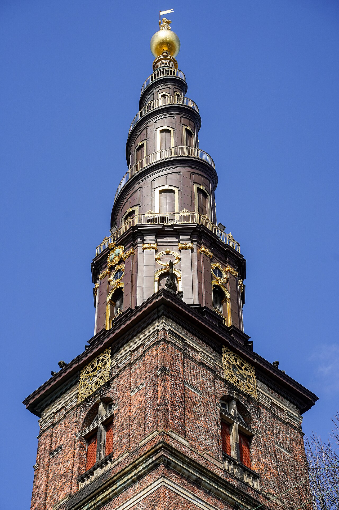
Nuotrauka: OleNeitzel, CC BY 4.0, WikimediaGarsieji auksiniai spiraliniai laiptai bažnyčios bokšte su vaizdu į Christianshavną. Bilietas 70 DKK (bažnyčia nemokama). Bokštas uždaromas vėjuotu ar lietingu oru — vietoje patikrinkite prieš lipimą.
📍 Google MapsPėsčiomis Christianshavn kvartalu.
Freetown Christiania
 Nuotrauka: Neptuul, CC BY-SA 4.0, Wikimedia
Nuotrauka: Neptuul, CC BY-SA 4.0, Wikimedia
Alternatyvi savivaldi bendruomenė su gatvės menu — lankytis tik šviesiu paros laiku. Pusher Street gatvėje nefotografuokite.
📍 Google Maps~8 min pėsčiomis iki Christianshavn stotelės, Metro M1: Christianshavn → Ørestad (tiesioginis, ~10 min), toliau ~5 min pėsčiomis iki Fields.
Fields (vakarienė)
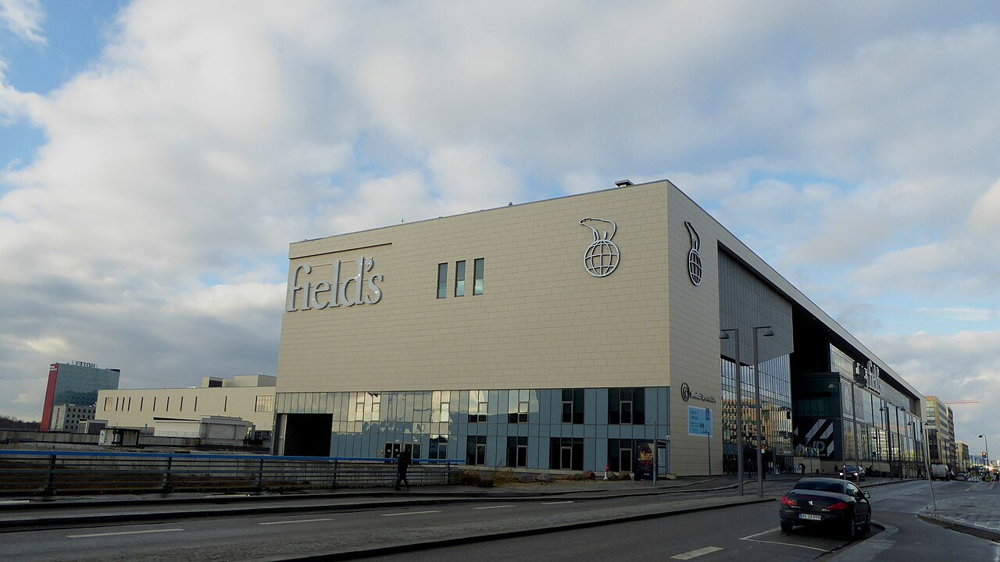
Nuotrauka: Leif Jørgensen, CC BY-SA 4.0, WikimediaLengva vakarienė prekybos centro maitinimo zonoje prieš koncertą — WOK - Fields, geriausiai įvertinta (4,7★) vieta maitinimo zonoje. 📍 Google Maps (WOK - Fields)
📍 Google MapsPėsčiomis.
🎸 Renginys
Royal Arena — Deep Purple koncertas
 Nuotrauka: Jenny Andersson / News Oresund, CC BY 2.0, Wikimedia
Nuotrauka: Jenny Andersson / News Oresund, CC BY 2.0, Wikimedia
Deep Purple koncertas. Durys atsidaro apie 18:00, pradžia tikėtina ~20:00 su atlikėju-pirmtaku — tikslų laiką verta patikrinti livenation.dk arčiau datos. Šeštadienio naktį (10-24→10-25) grąžinamas žiemos laikas — gauta papildoma valanda.
📍 Google Maps~10–16 min pėsčiomis iki Ørestad stotelės, Regioninis traukinys (Öresundståg): Ørestad → København H (~8 min), toliau Metro M4: København H → Sluseholmen (~8 min), toliau 4 min pėsčiomis iki apartamentų.
🌧 Planas B (jei blogas oras)
Jautru orui: Vor Frelsers Kirke spiralinio bokšto lipimas lauke ir pasivaikščiojimas po Christianiją lauke beveik neįmanomi dėl stiprios audros – 99% lietaus tikimybė, 14,6 mm kritulių ir iki 60,5 km/val vėjas; bokštas tokiomis sąlygomis saugumo sumetimais paprastai uždaromas.
Alternatyva: Nationalmuseet, bažnyčios vidus ir Nordatlantens Brygge vietoj bokšto lipimo ir Christianijos
Nationalmuseet
Didžiausias Danijos muziejus – vikingų ir priešistorės kolekcijos.
📍 Google MapsVor Frelsers Kirke
Audringu oru (vėjas virš 60 km/val) lauko spiralinis bokštas uždarytas saugumo sumetimais – apžiūrėkite tik vidinę barokinę bažnyčios erdvę su garsiaisiais vargonais.
📍 Google MapsNordatlantens Brygge
Vietoj lauko pasivaikščiojimo po Christianiją – buvęs sandėlio pastatas su Grenlandijos, Farerų ir Islandijos meno parodomis bei jaukia kavine. Sekmadienį atvira 12:00–17:00.
📍 Google MapsRoyal Arena — Deep Purple koncertas
Deep Purple koncertas. Durys atsidaro apie 18:00. Šeštadienio naktį (10-24→10-25) grąžinamas žiemos laikas – gauta papildoma valanda.
📍 Google MapsBaigiasi toje pačioje vietoje kaip ir pagrindinis planas — apartamentuose.
Patarimas: Nordatlantens Brygge sekmadieniais dirba tik 12:00–17:00, todėl geriau aplankyti po pietų, prieš vykstant į Fields.
📅 4 diena, 2026-10-26 — Paskutinis rytas Sydhavnen ir skrydis namo
Sluseholmen kanalų pasivaikščiojimas
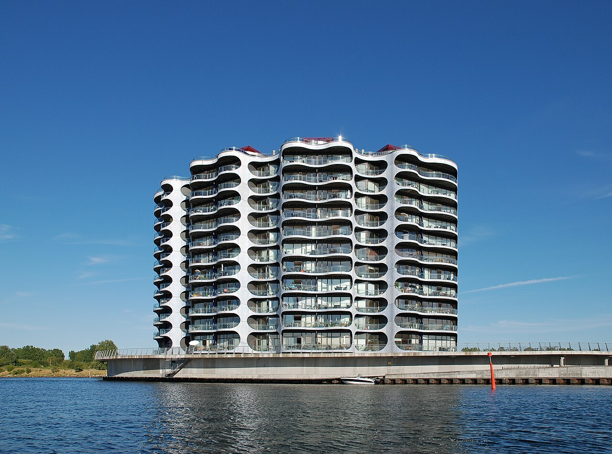
Nuotrauka: Bob Collowan, CC BY-SA 3.0, WikimediaLengvas rytinis pasivaikščiojimas palei modernius Sluseholmeno/Teglholmeno kanalus su plūduriuojančiais namais — ramus atsisveikinimas su rajonu prieš išsiregistravimą.
📍 Google MapsPėsčiomis palei kanalą į Fisketorvet rajoną.
Flammen Fisketorvet (pietūs)
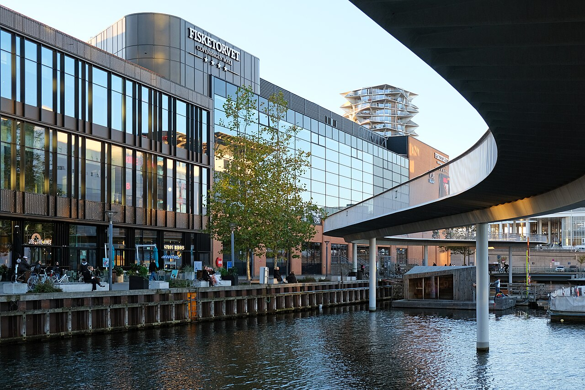
Nuotrauka: kallerna, CC BY-SA 4.0, WikimediaAnkstyvi pietūs danų grilio restorane Fisketorvet prekybos centre — paskutinis kartas pavalgyti prieš skrydį (pietūs ankstesni dėl skrydžio laiko).
📍 Google Maps28 min pėsčiomis iki Sluseholmen stotelės, Metro M4: Sluseholmen → København H (8 min), M2: København H → Københavns Lufthavn (14 min).
Copenhagen Airport (CPH)
Nuotrauka: kallerna, CC BY-SA 4.0, Wikimedia
Skrydis CPH→KUN išvyksta 15:15. Atvykstama 13:15 su 2 val. buferiu registracijai ir saugumo patikrai.
📍 Google Maps🗺️ Žemėlapis
🎒 Ką pasiimti
- Danijos elektros lizdai (tipas C/K) sutampa su Lietuvos kištukais (tipas C) — adapterio paprastai nereikia.
- Spalio 25 d. prognozuojamas labai stiprus lietus ir vėjas (99% tikimybė, iki 60,5 km/h) — rinktis visiškai neperšlampamą striukę ir patikrinti, ar Vor Frelsers Kirke bokštas tą dieną neuždarytas dėl vėjo.
- Skysčiai rankiniame bagaže — tik iki 100 ml talpyklose, visi kartu viename 1 l permatomame maišelyje.
- Peilių ir daugiafunkcinių įrankių į saloną neimti, nes keliaujama tik su rankiniu bagažu.
Dokumentai ir pinigai
Drabužiai orams (9–12 °C, lietus, stiprus vėjas 3-ią dieną iki 60 km/h)
Vaikščiojimui ir viešajam transportui
Technika
Higiena (talpyklos iki 100 ml)
Kita
🍽 Kur pavalgyti
1 diena
Nyhavns Færgekro
Netoli: Nyhavn (1-os dienos pietų stotelė) · Tradicinis smørrebrød restoranas · ~30 €/asm. pietums · Vakarienė ~42 € asmeniui
Tradicinis restoranas tiesiai ant Nyhavn kanalo su plačiu silkių ir smørrebrød pasirinkimu bei namine akvavit.
📍 Google MapsKą paragauti čia
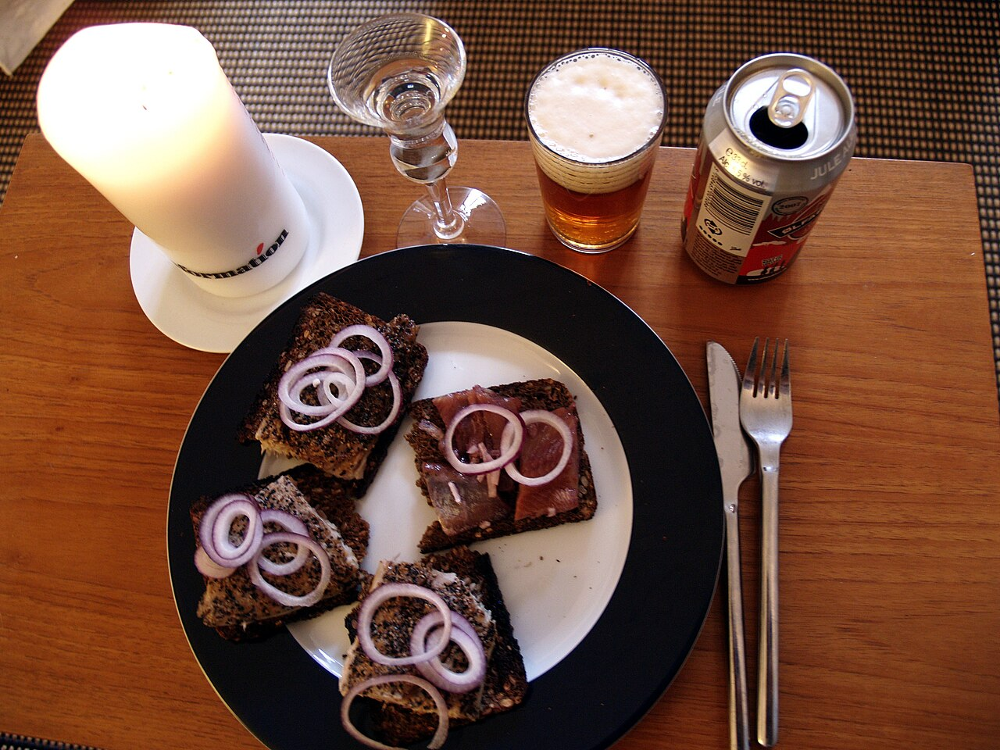


Halvandet
Netoli: Apartamentai, Kenny Drews Vej 37 (Sydhavnen) · Plūduriuojantis uosto baras-restoranas · ~25 €/asm. · Vakarienė ~30 € asmeniui
Vakarienė plūduriuojančiame uosto bare pačiame Sydhavnen rajone, žingsnis nuo apartamentų.
📍 Google MapsKą paragauti čia
2 diena
Hallernes Smørrebrød
Netoli: Torvehallerne turgus · Smørrebrød prekystalis turguje · ~18 €/asm.
Geriausias tradicinio smørrebrød pasirinkimas mieste tiesiai turgaus salėje, gaminama akimirksniu iš šviežių, vietinių produktų.
📍 Google MapsKą paragauti čia
Café Langebro
Netoli: Apartamentai, Kenny Drews Vej 37 · Istorinis alaus baras-kavinė · ~20 €/asm. · Vakarienė ~24 € asmeniui
Veikia nuo 1917 m. — jaukus, autentiškas alaus baras tiesiai ant vandens su terasa, puikus vakaro saulėlydžiui prie kanalo.
📍 Google MapsKą paragauti čia

Netoliese
🍽 Pavalgyti netoliese
- Aller Media — kavinė · 260 m · ~4 min pėsčiomis — 📍 Google Maps
- Atrium Kantine — kavinė · 300 m · ~4 min pėsčiomis — 📍 Google Maps
- Kajen — maitinimo zona · 380 m · ~5 min pėsčiomis — 📍 Google Maps
- McDonald's — greito maisto restoranas (mėsainiai) · 400 m · ~5 min pėsčiomis — 📍 Google Maps
- Zocalo Kajen — greito maisto vieta · 420 m · ~6 min pėsčiomis — 📍 Google Maps
🛒 Parduotuvės netoliese
- Netto — maisto prekių parduotuvė · 440 m · ~6 min pėsčiomis — 📍 Google Maps
- French market — mini market · 440 m · ~6 min pėsčiomis — 📍 Google Maps
- Kiosk Bien — mini market · 450 m · ~6 min pėsčiomis — 📍 Google Maps
3 diena
Kanalcaféen
Netoli: Nationalmuseet / Christiansborg · Senoviška smørrebrød užeiga · ~25 €/asm.
Jaukus, senos laivo kajutės atmosferos restoranas prie kanalo, mėgstamas ir pačių danų — vienas geriausiai vertinamų smørrebrød Kopenhagoje.
📍 Google MapsKą paragauti čia
WOK - Fields
Netoli: Fields prekybos centras (prieš Deep Purple koncertą) · Azijietiškas prekystalis maitinimo zonoje · ~13 €/asm. · Vakarienė ~15 € asmeniui
Geriausiai įvertinta (4.7★) maitinimo zonos vieta Fields prekybos centre — greita ir soti vakarienė prieš koncertą Royal Arena.
📍 Google MapsKą paragauti čia
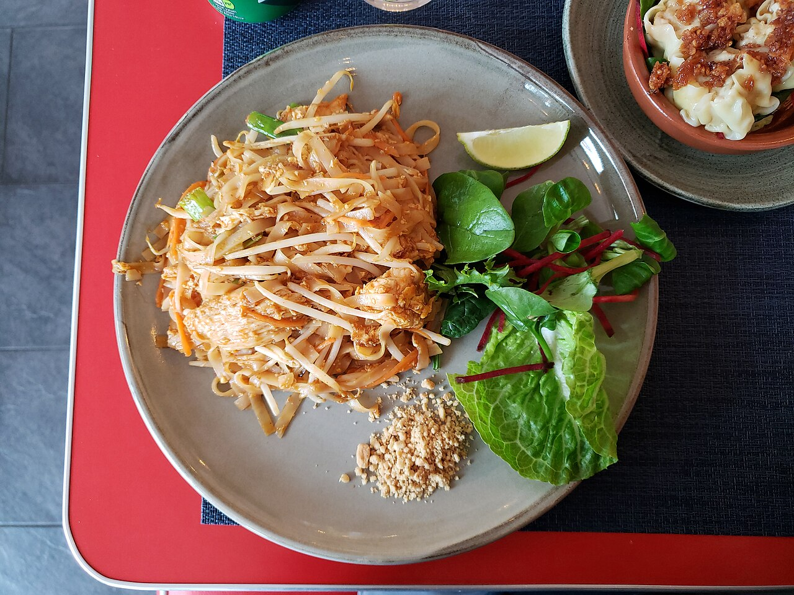
4 diena
Lagkagehuset Sluseholmen
Netoli: Sluseholmen kanalų pasivaikščiojimas / apartamentai · Danų kepykla-kavinė · ~12 €/asm.
Populiari danų kepyklų tinklo kavinė visai prie Sluseholmeno pasivaikščiojimo ir apartamentų — greitas, bet kokybiškas paskutinis pietų užkandis prieš skrydį.
📍 Google MapsKą paragauti čia
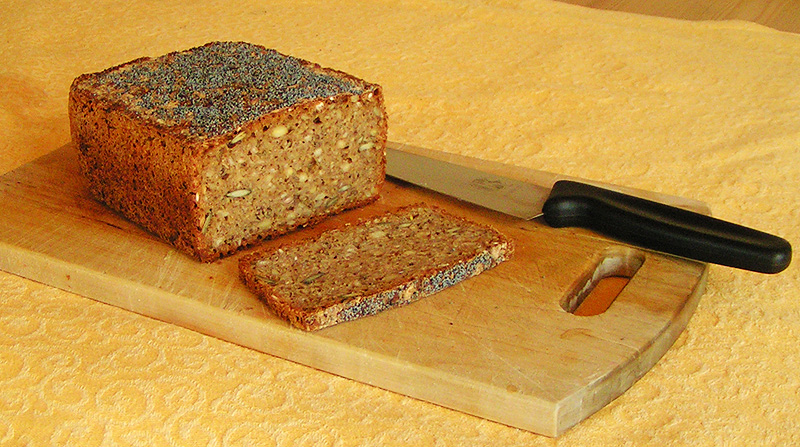

🍹 Barai
Hviids Vinstue
Netoli: Kongens Nytorv / Nyhavn (1 diena)
Seniausias veikiantis vyno barelis Kopenhagoje — veikia tame pačiame rūsyje nuo 1723 m., išgyvenęs didžiuosius gaisrus ir du pasaulinius karus. Tamsaus medžio interjeras, žvakės, be muzikos — tik pokalbiai.
📍 Google MapsCafé Nemoland
Netoli: Freetown Christiania (3 diena)
Legendinis baras pačiame Christianijos pramoninės zonos viduryje — spalvingos mūro sienos, girliandos ir lauko scena. Žinomas dėl nemokamų sekmadienio koncertų.
📍 Google Maps🍴 Ką paragauti
Ruginės duonos riekelė su sviestu ir gausiais priedais — silke, garnelėmis, kiaušiniu, mėsa ar sūriu. Danijos nacionalinis patiekalas, tradiciškai valgomas pietums.
9–17 € · Hallernes Smørrebrød, Kanalcaféen, Nyhavns FærgekroNuotrauka: Kritzolina, CC BY-SA 4.0, Wikimedia
Marinuota, rūkyta ar karriu padažu pagardinta silkė, dažniausiai patiekiama ant ruginės duonos su žaliuoku ar svogūnais — klasikinis danų pietų pradžiamokslis.
10–25 € · Nyhavns Færgekro, KanalcaféenNuotrauka: cyclone bill, CC BY-SA 2.0, Wikimedia
Keptos kiaulienos ir jautienos faršo kotletai, patiekiami su virtomis bulvėmis, rudu padažu ir raudonaisiais kopūstais arba agurkėlių marinatu.
16–26 € · Nyhavns Færgekro, KanalcaféenNuotrauka: cyclonebill, CC BY-SA 2.0, Wikimedia

Danijos neformalus nacionalinis patiekalas — kepta kiaulienos mėsa su traškia, keptai sūdyta žievele, patiekiama su bulvėmis, rudu padažu ir raudonaisiais kopūstais.
18–27 € · KanalcaféenNuotrauka: cyclonebill, CC BY-SA 2.0, Wikimedia
Tankia, tamsi, pilno grūdo ruginė duona — smørrebrød pagrindas ir nepakeičiama danų stalo dalis prie kiekvieno patiekalo.
3–9 € · Lagkagehuset Sluseholmen, Nyhavns Færgekro, KanalcaféenNuotrauka: Mogens Engelund, CC BY-SA 3.0, Wikimedia
Sluoksniuotos tešlos saldus kepinys su įvairiais įdarais (obuolių, migdolų, vanilės kremo) — tradicinė danų kavos pertraukėlė.
3–6 € · Lagkagehuset SluseholmenNuotrauka: Peter Isotalo, CC BY-SA 3.0, Wikimedia
Ruginė duona su sviestu, nuluptomis garnelėmis, majonezu, citrina ir krapais — vienas populiariausių smørrebrød variantų.
11–17 € · Hallernes SmørrebrødNuotrauka: Benreis, CC BY-SA 4.0, Wikimedia
Smulkiai kapota žalia jautiena su trynio, svogūnų, kaparėlių ir krienų priedais ant ruginės duonos — populiarus smørrebrød klasikas.
12–18 € · Hallernes SmørrebrødNuotrauka: cyclonebill, CC BY-SA 2.0, Wikimedia
💶 Biudžetas
| Kategorija | Numatoma suma (4 žm.) |
|---|---|
| Skrydžiai Kaunas ⇄ Kopenhaga | ≈ 499 € |
| Nakvynė (3 naktys) | 780 € |
| Viešasis transportas (City Pass Small, 96 val.) | ≈ 150 € |
| Maistas | ≈ 796 € |
| Įėjimo bilietai ir Deep Purple koncertas | ≈ 810 € |
| Iš viso (4 žmonės) | ≈ 3 035 € |
| Vienam asmeniui | ≈ 759 € |
Didžiausia vienkartinė išlaida — Deep Purple bilietas Royal Arena (apie 83–95 €/asm., priklausomai nuo vietos kategorijos). Skrydžių kainos gali keistis iki užsakymo momento.
🌤 Orų prognozė
| Diena | Oras | Temperatūra | Lietaus tikimybė | Vėjas |
|---|---|---|---|---|
| 2026-10-23, Kopenhaga | Lietus | 9,5–12,0°C | 83% | iki 24,5 km/h |
| 2026-10-24, Kopenhaga | Dulksna | 10,1–11,6°C | 64% | iki 28,8 km/h |
| 2026-10-25, Kopenhaga | Lietus | 9,6–12,0°C | 99% | iki 60,5 km/h |
| 2026-10-26, Kopenhaga | Debesuota | 9,1–12,3°C | 29% | iki 28,9 km/h |
Tai yra tikra prognozė kelionės datoms (ne daugiametis vidurkis).
ℹ️ Praktinė informacija
- Dokumentai: galiojantis pasas arba asmens tapatybės kortelė — Danija yra Šengeno zonoje, viza ES piliečiams nereikalinga.
- Pinigai: Danijos kronos (DKK), ne euro — nors Danija yra ES narė, euro zonai nepriklauso. Kortelės priimamos praktiškai visur, bet grynųjų verta turėti Christianijoje (bankomatų ten mažai) ir prie kai kurių mažų prekystalių.
- Arbatpinigiai: neprivalomi — paslauga paprastai įskaičiuota į sąskaitą. Už ypač gerą aptarnavimą galima palikti ~10%.
- Sveikata: pasiimkite Europos sveikatos draudimo kortelę (EHIC) nemokamam ar sumažintos kainos gydymui.
- Pagalbos numeris: 112 (policija, gaisrinė, greitoji — skambutis nemokamas). Nekritinėms medicininėms konsultacijoms: 1813.
- Bilietai viešajam transportui: pirkite Rejsebillet programėlėje arba automatuose stotelėse; intensyviam lankymui patogus City Pass Small (zonos 1–4, 96 val.).
- Papročiai: danai vertina punktualumą ir eilių laikymąsi; dviračių takai (cykelsti) yra rimtas dalykas — niekada nevaikščiokite jais.
- Saugumas: Kopenhaga yra labai saugus miestas, bet saugokite daiktus turistų gausiose vietose (Nyhavn, Strøget). Christiania saugi šviesiu paros laiku — vakare lankytis nereikėtų, Pusher Street gatvėje nefotografuoti.
✈️ Skrydžiai ir kontaktai
Atskrydis: Kaunas → Kopenhaga, 2026-10-23, atvykimas 09:40
Išskrydimas: Kopenhaga → Kaunas, 2026-10-26, išvykimas 15:15 (registracijai vykti į oro uostą 13:15)
Kontaktinis asmuo Lietuvoje: ______________
Draudimo poliso numeris: ______________